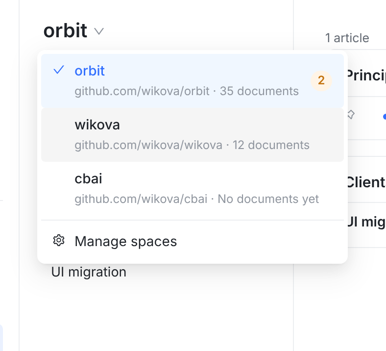
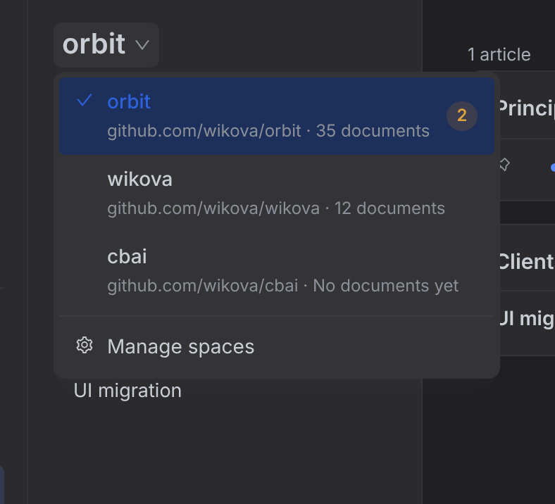
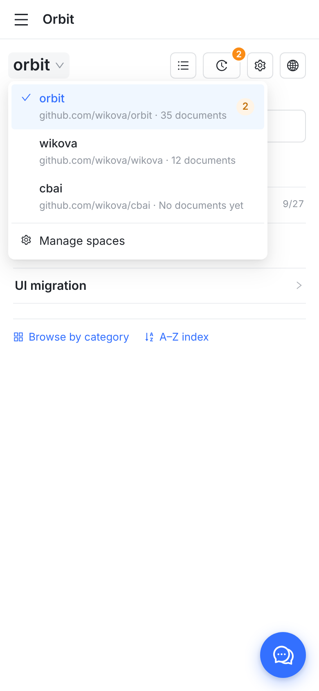

A 一行：只有名字和橙色计数 更紧凑，和左侧主导航 Wiki 分组的写法一样。但同名不同仓库时看不出区别，也看不出哪个 wiki 还没写文档。建议B 两行：名字 + 仓库 · 文档数 和 iOS / Android 的 wiki 菜单写的内容一致（它们已是名字下面写仓库和文档数）。wiki 不多，菜单高一点没关系。
B 的其他状态

悬停到另一行：浅灰底

暗色

手机（390 宽）：顶部名字点开，同一个菜单
只有一个 wiki 时名字不能点，没有菜单（不变）。
Mac / iPad / iPhone / Android 各用平台自己的菜单，内容已是 B 的写法，这次不动。